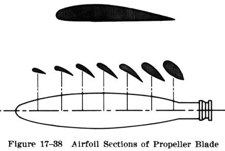
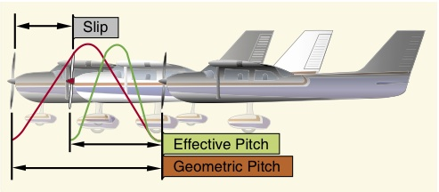

By Aditya Jain
Its job is to convert the engine power into thrust, to pull/push the plane through the air.
The twist in the propeller is there to create the essential AoA, just like a wing has an AoA. The twist is greater towards the hub of the prop of varying airspeeds along the length of the blades, and hence varying thrust generation The difference occurs because the outer tips of the prop move faster than the inner tips, thus the AoA has to change accordingly.
RC propellers are designated with two measurements(both in inches):
Diameter of the imaginary disc created by the spinning prop i.e. the length of prop from tip to tip.
Pitch measurement of a prop indicates how far that prop will move through the air per single revolution of the engine (i.e. every single complete turn of the prop). Thus, higher the pitch, faster the plane will go.

Propeller slip is the difference between the geometric pitch of the propeller and its effective pitch. Geometric pitch is the theoretical distance a propeller should advance in one revolution; effective pitch is the distance it actually advances. Thus, geometric or theoretical pitch is based on no slippage, but actual or effective pitch includes propeller slippage in the air.
To put it another way, propeller blades are twisted to change the blade angle in proportion to the differences in speed of rotation along the length of the propeller and thereby keep thrust more nearly equalized along this length.

Note: In multi-engined aircraft, closer engine spacing is maintained, thus reducing the structural weight of the wing to a minimum.